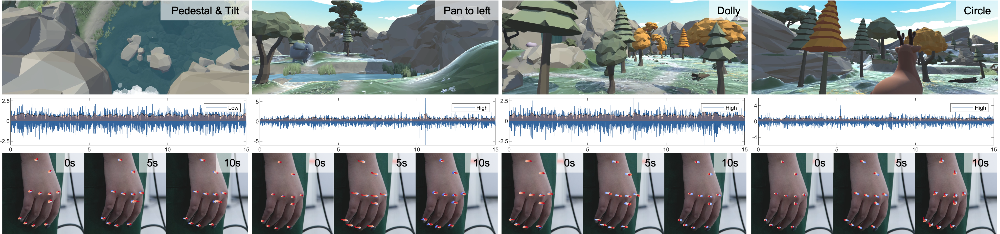
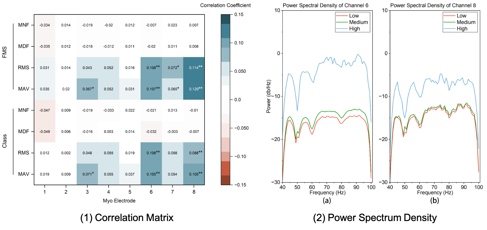

Cybersickness and Postural-Behavior Correlation Analysis
Date: 2024-03-13 | Lastmod: 2024-07-10
The Correlation Analysis Between Cybersickness and Postural Behavior in Immersive VR Experience
Ying Zhong1, Ke-Ao Zhao1, Leping Zhang1, Fangming Zhao1, Wentao Wei2, Feilin Han1*
1 Department of Film and TV Technology, Beijing Film Academy
2 School of Design Arts and Media, Nanjing University of Science and Technology
Abstract
Cybersickness detection is one of the primary tasks in Virtual Reality (VR) content production. The existing subjective and objective studies on cybersickness give few guiding implications to VR content creators. To do experimental verification on previous hypotheses and propose design guidelines, this paper investigates the relationship between cybersickness and postural behavior, by analyzing the surface electromyography (sEMG) signals and hand movement videos. We conducted a user study to build the sEMG-video Cybersickness Benchmark Dataset (sEMG-CBD) and employed statistical analysis to summarize the regular pattern of participants' dizziness status under VR experiences. The results indicate that the fluctuations of cybersickness correlate positively with the extent of forearm sEMG signals and hand movements.

The correlation analysis between cybersickness and postural behavior is based on sEMG signals and hand movement videos, offering VR content creators a measuring approach to intuitively track users' dizziness status...

ACKNOWLEDGMENT
This work was supported by The National Social Science Fund of China (No. 20BC040) and the National Natural Science Foundation of China (No. 62002171).